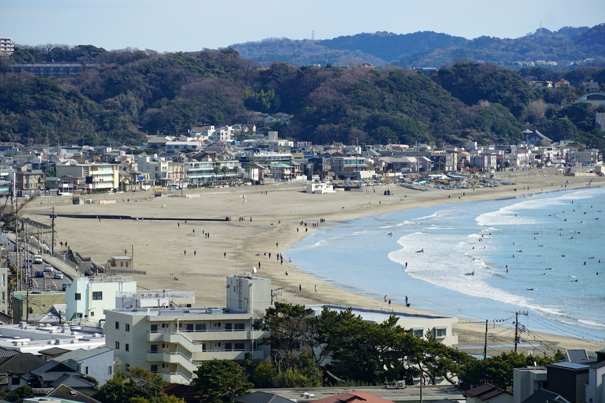
鎌倉のいま
いま動いていること
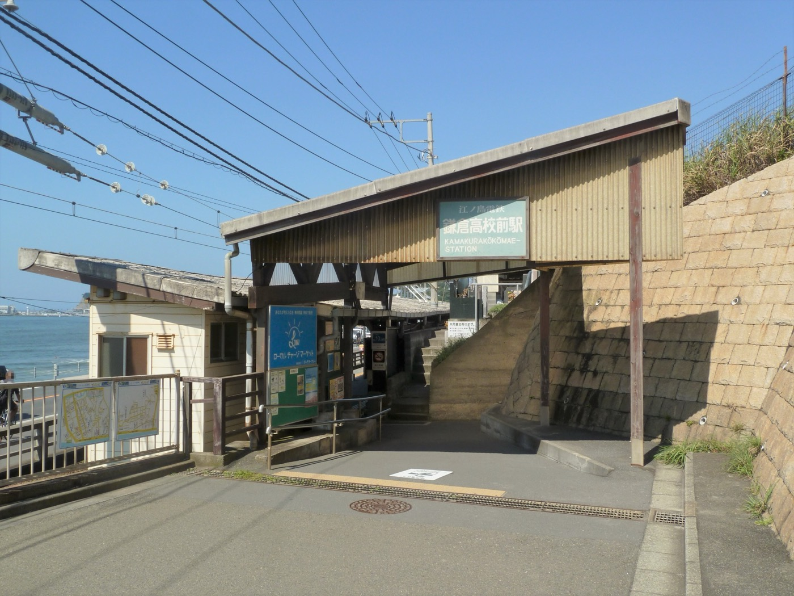
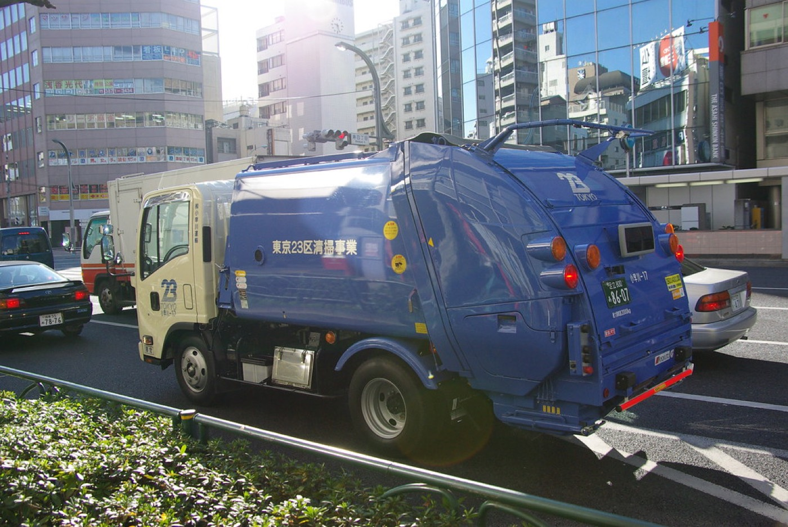
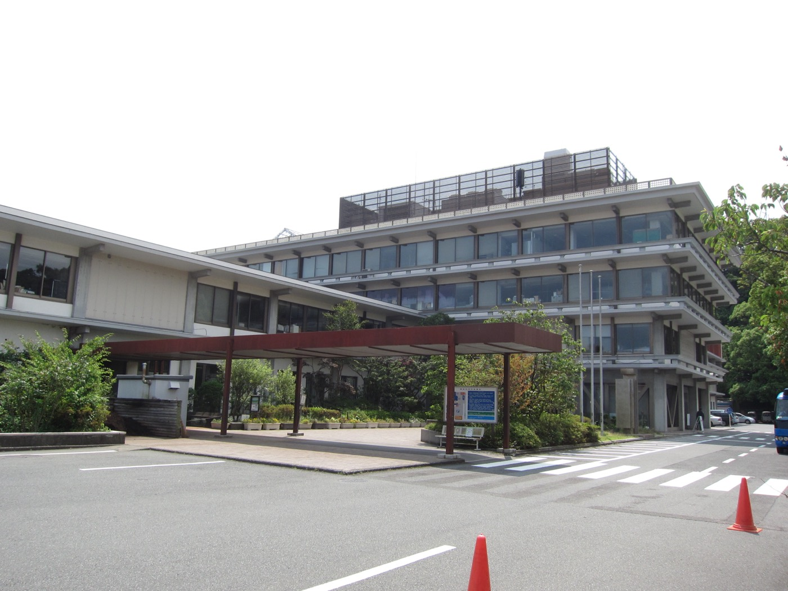
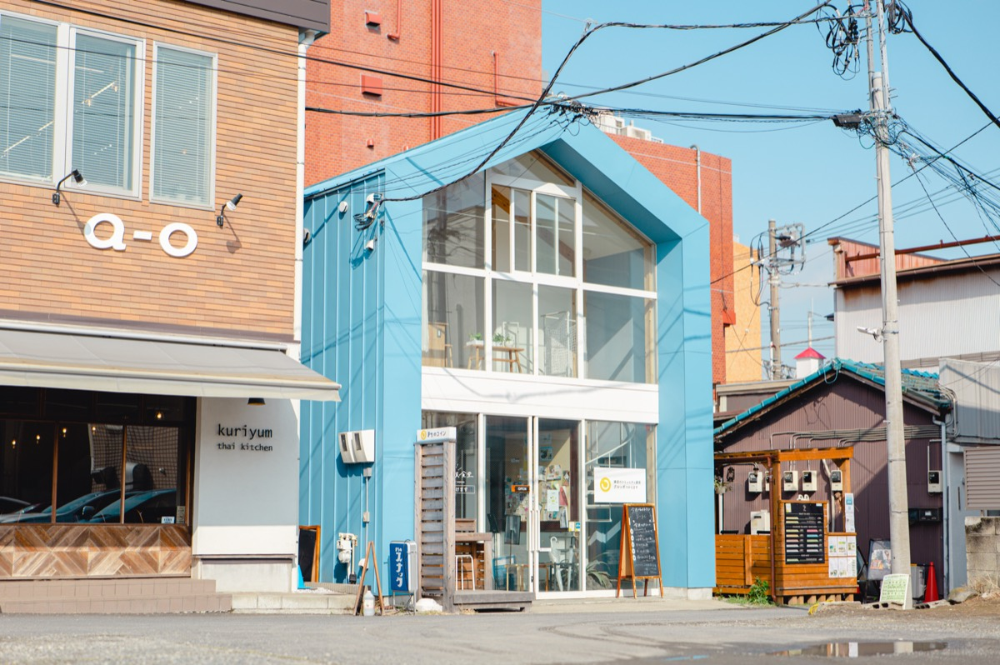
みんなで進めていること
次に起きること
テーマ
街のこれから
自分にできること
予算
テーマ
市役所の移転
御成町に残すか、深沢へ移すか。8 年ごしの論点。
3 行で
どんな問題？
鎌倉市役所はいま、鎌倉駅西口の御成町にあります。建物の老朽化と、地震や津波のときに本庁舎が使えなくなる心配から、市は深沢（湘南深沢駅のそばにある市の広い土地）へ移す計画を進めてきました。
ただ、市役所の場所を変えるには条例を変える必要があり、議会の 3 分の 2 の賛成が要ります。2022 年 12 月の採決は 16 対 10 で届きませんでした。
そこで市は 2025 年、御成町に市長室と議会を残して窓口など 8 割の機能を深沢へ移す「両輪案」を出しました。条例を変えずに進められる一方で、「2 か所に分かれて不便」「進め方が強引」という声があります。
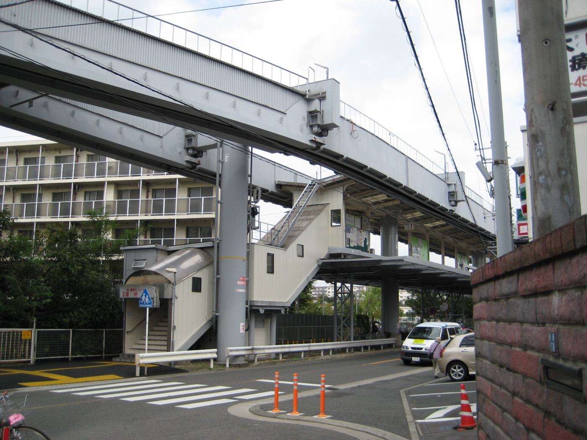
候補地・深沢意見が分かれるところ
これまで
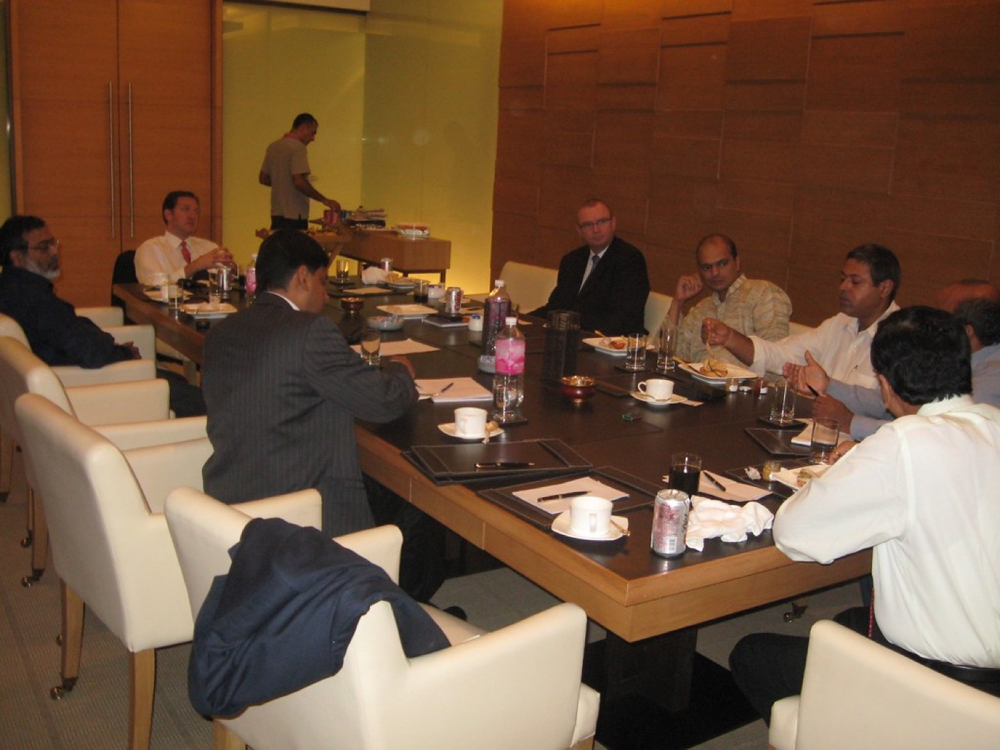
よくある質問
両輪案では、市長室と議会は御成町のまま、窓口など 8 割の機能が深沢へ。まだ決まっていません。
2018 年の直接請求（8,270 筆）は議会で否決。2025 年の市長選で争点になりましたが、いま予定はありません。
12 月定例会（12/2〜）で質疑。お金が絡むので、2026 年 2 月の予算案も山場です。
みんなの意見
- 賛成: 災害時に本庁舎が使えないリスクを早く減らしたい。深沢は広く、駐車場と将来の建て替えに余裕がある
- 反対: 2 拠点は二重行政で費用がかさむ。条例改正を避ける進め方に納得できない。深沢は浸水域で渋滞も心配
- 両方: 住民投票で決着をつけるべき、という声が賛否どちらにもある
賛成の理由
津波警報のとき市役所に避難して、建物の古さが怖かった。早く安全な場所にしてほしい。
深沢なら駐車場も広い。高齢の親を車で連れて行きやすい。
反対の理由
2 か所に分かれると手続きで行ったり来たりになりそう。費用も二重にかかるのでは。
3 分の 2 が取れないから条例を変えずに進める、というやり方が納得できない。住民投票をしてほしい。
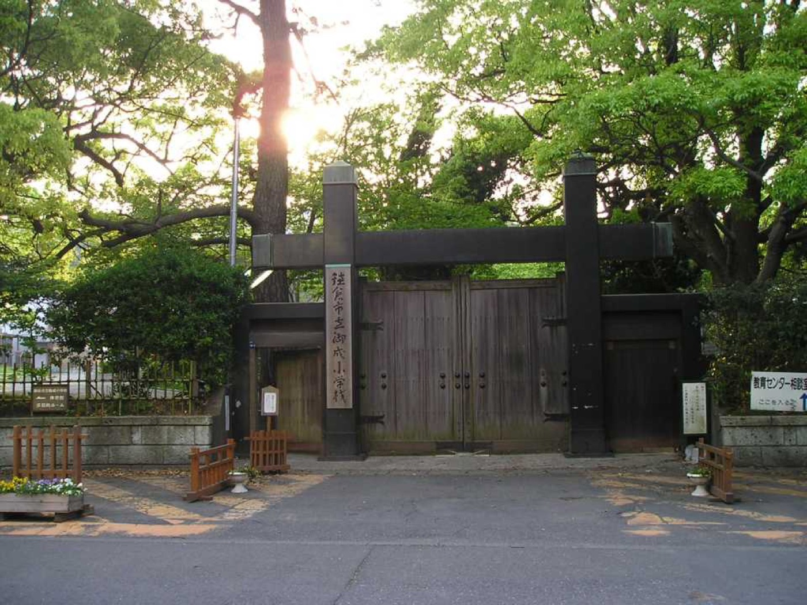
学校の暑さ対策
体育館にエアコンを。避難所としての備えも。
3 行で
どんな問題？
2025 年 7 月 30 日の津波警報で、多くの人が学校の体育館に避難しました。そこで問題になったのが暑さです。体育館にエアコンがない学校がほとんどで、猛暑の日は休み時間に体育館で過ごすこともできません。
9 月の定例会で細川まなか議員がエアコンの設置を求め、市は「喫緊の課題」と認めて 2026 年度の予算化を目指すと答えました。全校に一度に付けると費用が大きいため、どの学校から始めるか、国の補助をどう使うかが論点です。
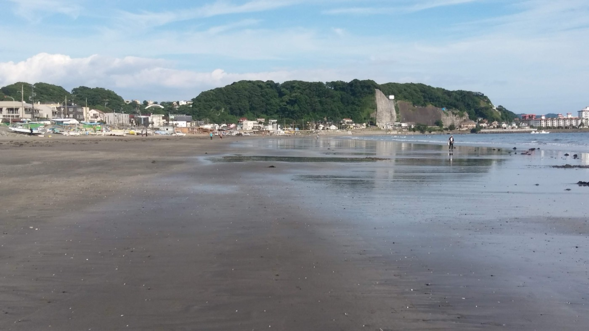
津波警報のとき避難した海沿いこれまで
よくある質問
市の答弁は「2026 年度の予算化を目指す」。付く学校と時期は 2 月の予算案で分かります。
体育館 1 棟で数千万円規模と言われます。国の補助を使えるかが鍵です。
資料室
フォーラム
鎌高前踏切、週末だけでも警備員を置けませんか？
週末の鎌高前踏切、人があふれて車道に出る人も多くて、子どもの通学が本当に危ないです。9月の議会で陳情は採択されたけど、具体的に誰が何をするかはまだ決まっていないはず。
警備員を置くとか、せめて週末だけでも何かできないですかね？ みなさんどう思いますか？
コメント 12 件
毎週土曜、朝 9 時には踏切の前が渋滞です。住民で交代で見守るのも考えたけど、事故のときの責任が怖くて踏み切れていません。
ご指摘の状況は市も把握しています。警備員は 2 人・土日祝 60 日だと年 400 万円ほどで、観光費（4.1 億円）の約 1% です。試行なら来年度の予算で検討できます。
逆にお聞きしたいのですが、平日はどう感じていますか？ 週末だけの対策で足りるか、皆さんの実感を知りたいです。
平日は通学の時間だけ混みます。週末は一日中。まず週末からで十分だと思います。
七里ヶ浜側の踏切には週末に係員を置いています。鎌倉高校前も同じようにできるか、社内で確認します。
警備員を置くと、人が別の踏切に移るだけになりませんか？ 写真を撮りたい人は減らないので、撮影してよい場所を決めて誘導するほうが効くかも。
撮影スポットの案、いいと思います。江ノ電さんの駅前の広場とか使えませんか？
委員会でも取り上げます。市の試算（年 400 万円）と住民の見守りを組み合わせる形なら、12月定例会で質問できます。
費用は観光客にも負担してもらう形がいいです。宿泊税の使い道として考えられないでしょうか。
投稿
マイページ
街のこれから
9月定例会
トピック
市役所は「2 拠点」に？ 両輪案が登場
避難所が暑すぎる。体育館にエアコンは？
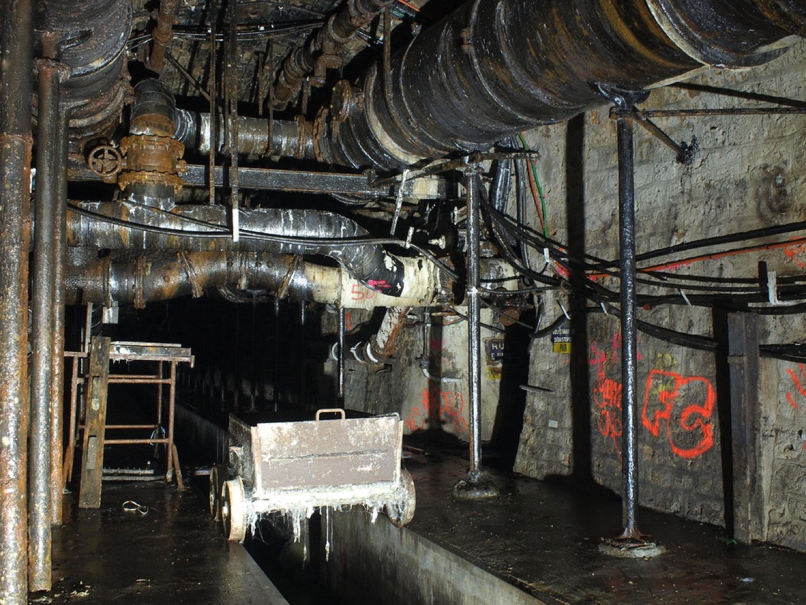
下水道管の 25% が耐用年数を超えている
鎌高前踏切、観光客の増加で治安が悪化
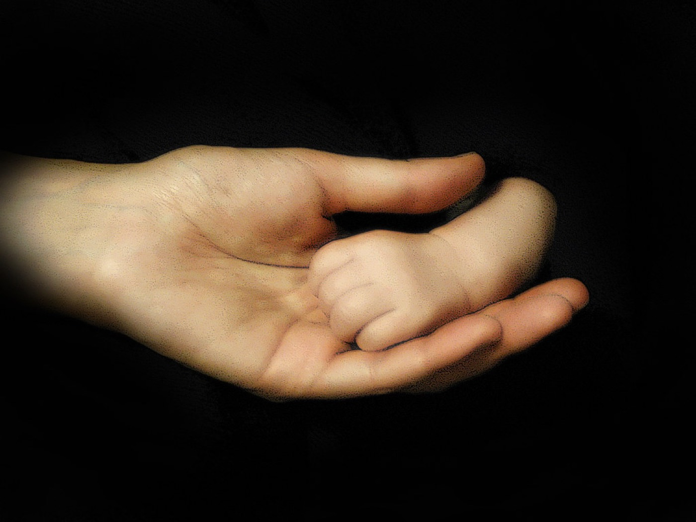